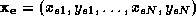
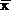
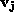
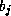
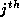
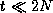

A PDM is built purely from the statistical analysis of a number of examples of the object to be modelled [3]. Given a collection of training images of an object, the Cartesian coordinates of N strategically-chosen landmark points are recorded for each image. Training example e is represented by a vector  (for a 2D model).
The examples are aligned (translated, rotated and scaled) using a weighted least squares algorithm, and the mean shape  is calculated by finding the mean position of each landmark point. The modes of variation are found using Principal Component Analysis (PCA) on the deviations of examples from the mean, and are represented by N orthonormal `variation vectors'  . An object shape is generated by adding linear combinations of the t most significant variation vectors to the mean shape:
where  is the weight for the  variation vector. Generally, most important deformation is captured by only a few variation vectors; the rest represent noise in the training data. By choosing  , we extract only the important deformations, discarding noise, and thus compactly capture object shape and variation.
A good deformable model should be accurate, specific and compact. An accurate model includes all valid shapes. A specific model excludes all invalid shapes. A compact model uses the smallest number of parameters possible to describe a shape (ie. its dimensionality approaches the natural deformational dimensionality of the object being modelled).
Model shape can be described in terms position within an n-dimensional shape space. In the case of a PDM the dimensions are the x and y coordinates of every landmark point. Within the shape space there is generally a continuous region which corresponds to valid shapes; in this paper we refer to this as the valid shape region, or VSR.
The Linear PDM assumes that the set of all valid shapes forms a Gaussian distribution about some mean point in the shape space, representing the VSR as being bounded by a hyperellipsoid. In some cases, especially when model landmarks have been chosen strategically, this approximation is sufficient to produce a satisfactory model which is both compact and specific. However, in many real objects, non-linear deformations (such as bending or pivoting) are a natural occurrence. The Linear PDM is forced to model non-linear deformations by the combination of two or more linear deformations. Such models are not compact because the dimensionality is increased, and not specific because invalid shapes can be produced via an invalid combination of linear deformations (see Figure 4 for examples).
There are various techniques one can use to transform the shape space in such a way as to linearise the VSR [9, 10, 6]. In these approaches there is always a notion of a base shape (usually the mean shape) and a fixed number of independent modes of variation, valid over a fixed, continuous range. However, in some cases the VSR is not linearisable in a simple manner. A VSR can in theory have an arbitrary topology and its dimensionality can vary over the shape space. This is perhaps more common than one might think; for example, in building a model of three hand gestures and the transitions amongst them, the VSR takes the form of a hollow triangle. A method is required for representing any possible VSR.